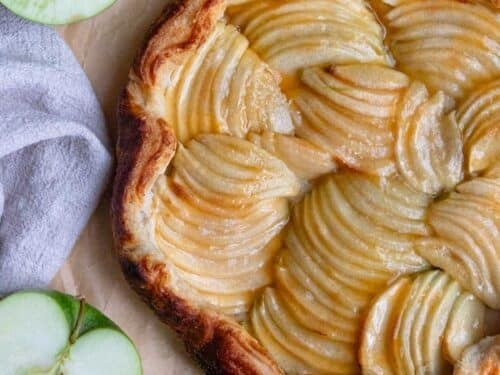

Home Page
Caramel-Apple Cake Recipe

Description
A wonderful two-layer white cake that contains a delicious
layer of apple filling, a sweet caramel frosting, and a
crunchy streeusel topper.
Ingredients
Cake
- 2 3/4 cups cake flour
- 4 teaspoons baking powder
- 3/4 teaspoon salt
- 4 large egg whites
- 1 1/2 cups white sugar
- 3/4 cup butter, softened
- 1 cup milk
- 1 teaspoon vanilla extract
- 1/2 teaspoon almond extract
Frosting
- 8 ounce pacakge cream cheese, softened
- 1/2 cup butter, softened
- 1/2 cup caramel sauce
- 2 teaspoons vanilla extract
- 1/2 teaspoon salt
- 5 1/2 cups confectioners sugar
Apple Filling
- 1 tablespoon butter
- 1 cup chopped peeled apple
- 1 tablespoon brown sugar
Streusel Topper
- 1/4 cup all purpose flour
- 2 tablespoons brown sugar
- 1/8 teaspoon ground cinnamon
- 2 tablesppons butter
- 2 tablespoons sliced almonds
Steps
- Preheat oven to 350 degrees F. and grease 2 round cake pans.
- Sift together cake flour, baking powder, and salt in medium bowl
- Beat egg whites until foamy in large bowl. Gradually add 1/2 cup white sugar until soft peaks.
- In clean large bowl mix butter with 1 cup white sugar until fluffy.
Mix in vanilla and almond extracts. Fold in egg whites.
- Bake in preheated oven for 35 to 40 minutes. Let cool on wire rack
for 10 minutes. Wrap each layer in plastic wrap and freeze for 2
hours.
- For frosting, mix cream cheese and butter in large bowl.
Add caramel sauce, vanilla extract, and salt until light
fluffy. Mix powdered sugar 1/2 cup at a time until desired
consistency.
- For filling, melt butter in skillet over medium heat. Add
apple and brown sugar to skillet. Coook and stir until apple
is tender and caramelized.
- For steusel topper, preheat oven to 350 degrees F.
Combine all purpose flour, brown sugar, and cinnamon in small
bowl. Add butter with pastry blender. Stir in almonds. Place
on cookie sheet and bake for 10 minutes.
-
Unwrap frozen cake layers. Spread fronsting on first cake layer.
Top layer with apple filling. Place remaing cake layer on top
of first layer. Spread frosting evenly on layer. Sprinkle topper
onto cake and serve.